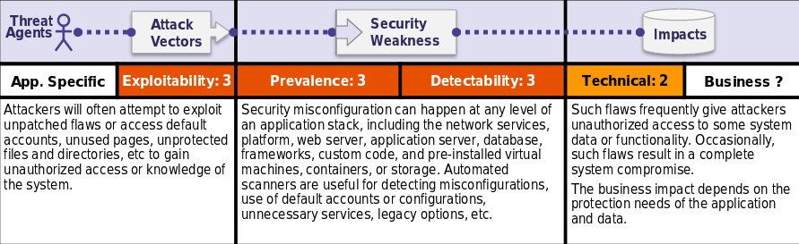

Is the Application Vulnerable?
The application might be vulnerable if the application is:
•Missing appropriate security hardening across any part of the application stack, or improperly configured permissions on cloud services.
•Unnecessary features are enabled or installed (e.g. unnecessary ports, services, pages, accounts, or privileges).
•Default accounts and their passwords still enabled and unchanged.
•Error handling reveals stack traces or other overly informative error messages to users.
•For upgraded systems, latest security features are disabled or not configured securely.
•The security settings in the application servers, application frameworks (e.g. Struts, Spring, ASP.NET), libraries, databases, etc. not set to secure values.
•The server does not send security headers or directives or they are not set to secure values.
•The software is out of date or vulnerable (see A9:2017-Using Components with Known Vulnerabilities).Without a concerted, repeatable application security configuration process, systems are at a higher risk.
How to Prevent
Secure installation processes should be implemented, including:
•A repeatable hardening process that makes it fast and easy to deploy another environment that is properly locked down. Development, QA, and production environments should all be configured identically, with different credentials used in each environment. This process should be automated to minimize the effort required to setup a new secure environment.
•A minimal platform withoutany unnecessary features, components, documentation, and samples. Remove or do not install unused features and frameworks.
•A task to review and update the configurations appropriate to all security notes, updates and patches as part of the patch management process (see A9:2017-Using Components with Known Vulnerabilities). In particular, review cloud storage permissions (e.g. S3 bucket permissions).
•A segmented application architecture that provides effective, secure separation between components or tenants, with segmentation, containerization, or cloud security groups.
•Sending security directives to clients, e.g. Security Headers.
•An automated process to verify the effectiveness of the configurations and settings in all environments.
Example Attack Scenarios
Scenario #1: The application server comes with sample applications that are not removed from the production server. These sample applications have known security flaws attackers use to compromise the server. If one of these applications is the admin console, and default accounts weren’t changed the attacker logs in with default passwords and takes over.
Scenario #2: Directory listing is not disabled on theserver. An attacker discovers they can simply list directories. The attacker finds and downloads the compiled Java classes, which they decompile and reverse engineer to view the code. The attacker then finds a serious access control flaw in the application.
Scenario #3: The application server’s configuration allows de-tailederror messages, e.g. stack traces, to be returned to users. This potentially exposes sensitive information or underlying flaws such as component versions that are known to be vulnerable.
Scenario #4: A cloud service provider has default sharing permissions open to the Internet by other CSP users. This allows sensitive data stored within cloud storage to beaccessed.